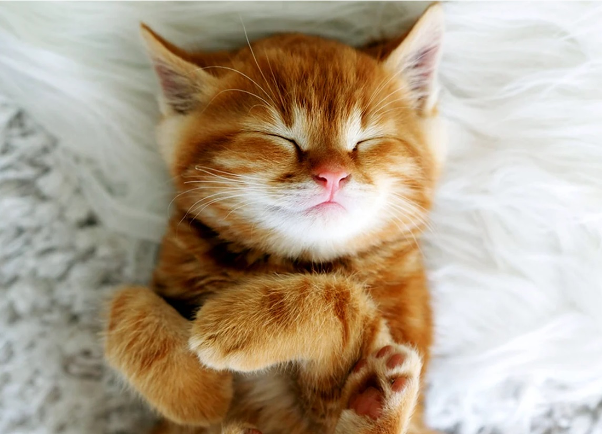
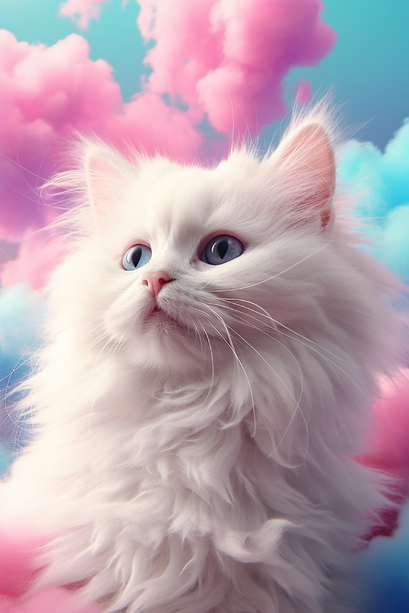

Коты - это одни из самых популярных домашних животных в мире. Они известны своей независимостью и игривостью.
Эти пушистики могут быть как очень активными, так и ленивыми. Они любят играть и исследовать окружающий мир.
Коты - замечательные компаньоны, которые могут принести много радости своим владельцам.
